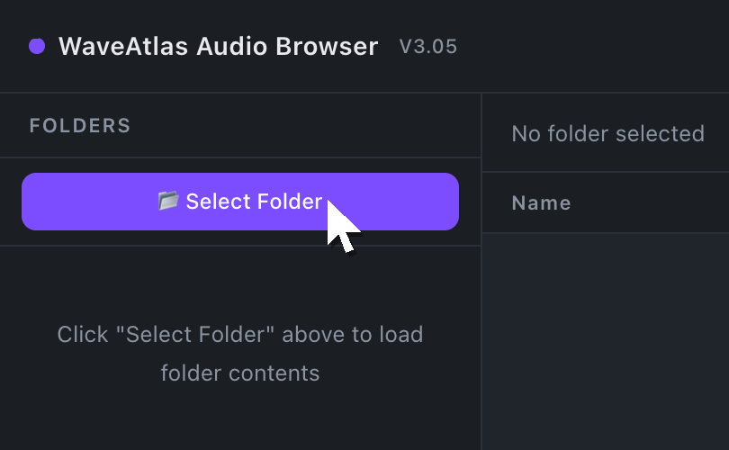
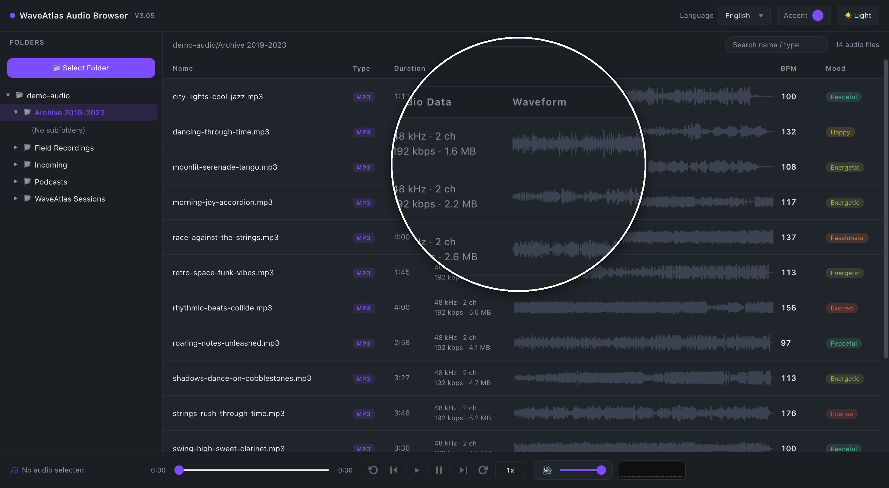
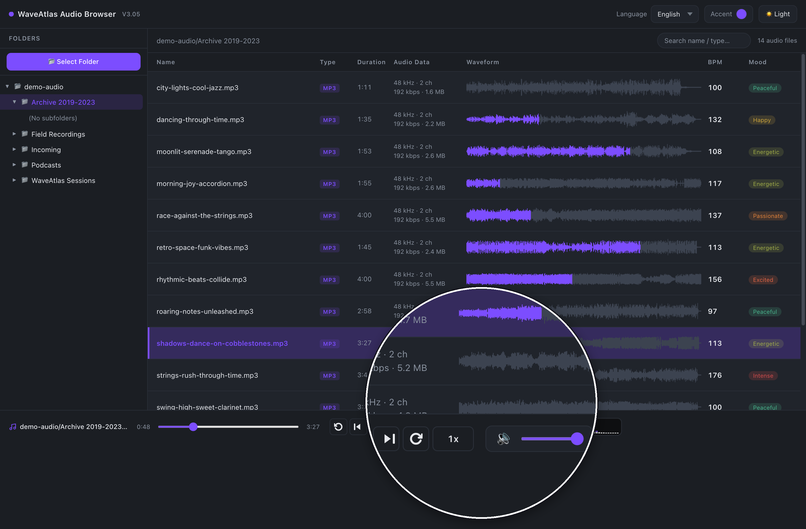
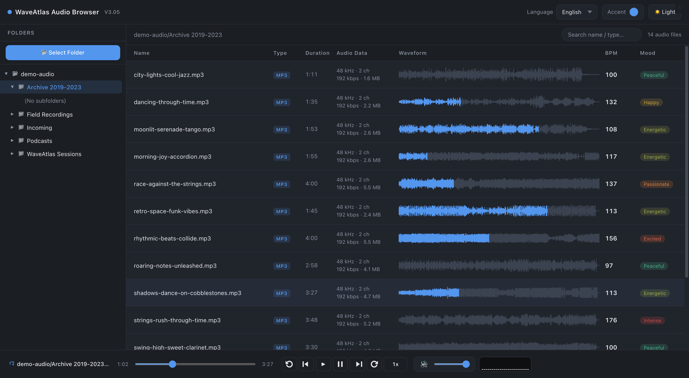
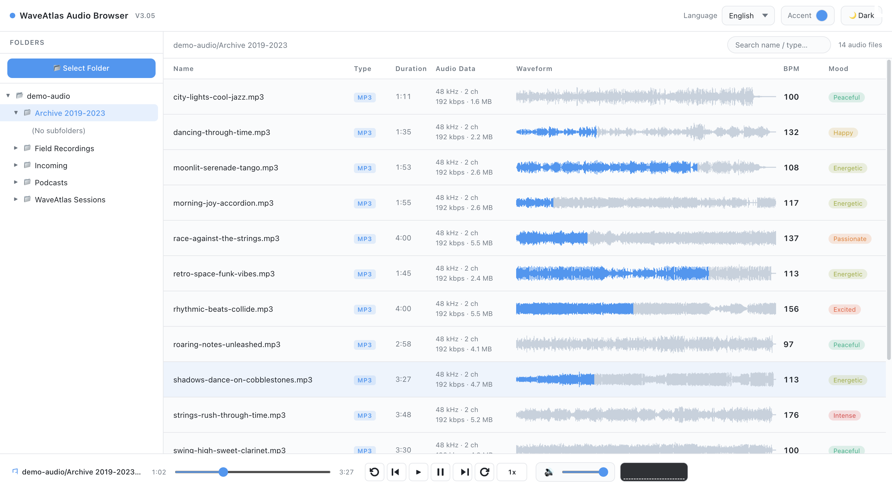
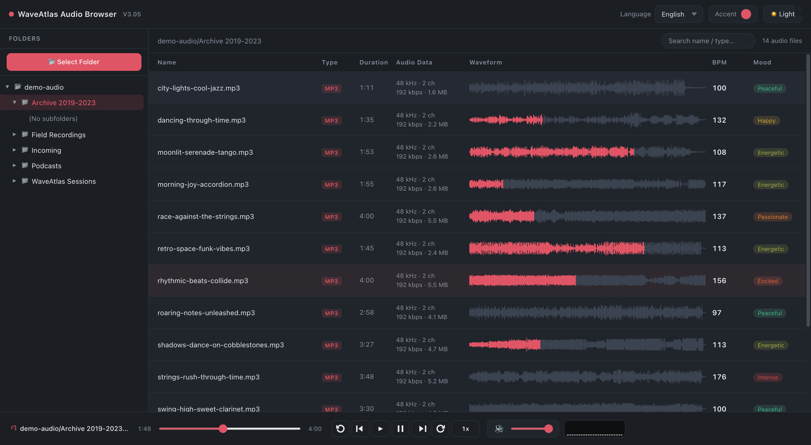

无需安装，不用注册，双击打开就能用。
选择一个本地文件夹，在目录树中点击单个文件夹，其下所有音频文件即在右侧排列展现。

所有音频文件以波形图呈现，信息直观，节奏、响度起伏一目了然。

点击波形任意位置，直接从该处播放；点击其他文件波形，随时无缝切换播放。

工具外观由你定义——不用改任何配置，点两下就换。
两种风格一键切换，深夜看波形不刺眼，白天整理不犯困。


◄► 左右拖动分割线，查看两种主题效果
主题色你说了算，波形、按钮、高亮一起联动换装。

界面内置 简体中文、繁体中文、英语、日语、韩语、法语、德语 七种语言，菜单里一键切换，立即生效。
所有解析、播放与波形分析都由浏览器在本地完成 音频数据一个字节都不会离开你的电脑
不用真的花四分钟听完整首音乐，你就可以"看见"它的概括全貌。
递归扫描所有子文件夹，每个音频一条波形，1600 个采样峰值的精细渲染——响度、节奏、段落起伏，扫一眼便知。
波形即进度条。点击任意位置直接跳转播放，试听素材、定位精华段落不再需要拖进度条。
自动分析每首音频的节拍速度，支持按 BPM 排序——挑选卡点素材、按速度归类，一目了然。
内置 9 种情绪标签：宁静、舒缓、轻快、平和、活力、欢快、激情、兴奋、狂热。音乐库的"气氛地图"。
播放时底部实时频谱随之跳动，配合 0.5x–2x 变速、±5 秒快进快退、上下曲切换的完整播放控制。
极简，轻盈，轻到不像一个"软件"。
* 波形与 BPM 分析基于浏览器本地解码，单文件解码上限 150MB；实际可播放的格式取决于浏览器内置解码器，部分浏览器不支持WMA。
WaveAtlas Audio Browser V3.05 · 单文件 HTML · 约 95 KB
在使用之前，你可能想知道这些。
不会。观澜是纯本地工具，所有解析、波形渲染、BPM 与情绪分析都在你的浏览器内完成，没有任何服务器参与，也没有任何数据上传。你可以断网使用来验证这一点。
不需要安装。整个软件就是一个约 95 KB 的 HTML 文件，下载后双击用 Chrome / Edge 打开即用。想卸载？删掉文件即可，不留任何痕迹。
可识别并列出 MP3、WAV、FLAC、OGG、M4A、AAC、OPUS、AIFF、APE、MIDI 等 17 种扩展名的音频文件；实际可播放的格式取决于浏览器内置解码器（Chrome / Edge 覆盖绝大多数常见格式，WMA 建议转码）。
这是浏览器（Chrome / Edge 86+）提供的本地文件夹读取权限，授权后工具才能列出并读取你选择的文件夹。授权范围仅限该文件夹，且只读——工具不会修改、移动或删除任何文件。
工具会持续迭代。重新下载最新版 HTML 文件、覆盖旧文件即可完成升级，没有任何迁移成本。